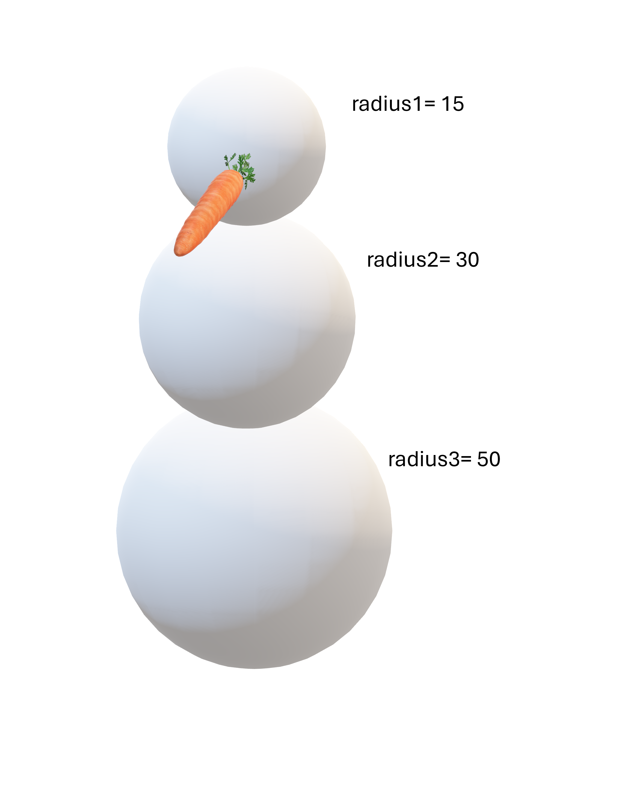
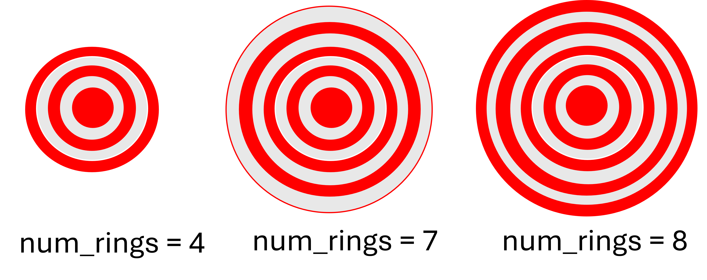

import math
def snow_weight(density, radius):
return (4/3)*density*math.pi*(radius**3)
def main(): #This is completely up to you, but I prefer putting the main program code in a `main()` function.
radius1 = 15
radius2 = 30
radius3 = 50
density = 0.30
ball_1 = snow_weight(density, radius1)
ball_2 = snow_weight(density, radius2)
ball_3 = snow_weight(density, radius3)
total_weight = ball_1 + ball_2 + ball_3
print(total_weight)✍️ Designing Functions
In this course, teachers will throw at you very wordy problems that can seem scary. But they always have “patterns” that can be translated to code. In this series of problems, we’ll explore how to use functions effectively to breakdown a problem into smaller solvable steps.
Problem 1: Snowman ☃️
You are building a snowman, your landlord (being a bit grumpy) is complaining that your snowman is going to weigh too much and damage his front lawn.
So, to calculate the weight of the snowman, you must first calculate the weight of snow for a given size of individual ball of snow, then add up all the snow balls weights together. The density of snow is \(\rho = 0.30\).

Write a python program which calculates the snowball weight while avoiding repeated calculations. The weight of each ball can be calculated using the following fomula:
\[ w = \frac{4}{3} \rho \pi r^3 \]
You can use
math.pi:
NoteHint2
- The volume of each ball will be repeated for each ball (3 times)
- It’s worth creating a function to perform the calculation and return the volume!
TipPossible Solution
Problem 2: Bacteria 🧫
A scientist is studying the growth rate of a bacteria colony. The colony starts with an initial population of 500 bacteria. Each year, the population increases by 100% except on the last year, the population grows by 150%. These values might change for various kinds of bacteria.
Write a program to simulate the growth of the colony over a given number of years
num_yearsand print the increase in bacteria and the expected total population every year.Run a simulation for
num_years=10with the provided growth rates mentioned above.
TipPossible Solution
This problem is simple enough to solve without any functions!
But for the sake or practice, let’s use functions!
One calculation that’s important is finding out how many new bacteria are created each year.
For that we can use a function! Let’s call it
get_increase()!
def get_increase(population, increase_percent):
return population * increase_percent
def bacteria_simulation(start_population, num_years, normal_growth, final_growth):
"""
Runs a simulation of bacteria growing every each by a given rate in decimal (from 0 to 1)
except for the final year where the bacteria grow at a different rate. Displays each year and
the expected population at that year.
Args:
- start_population : Starting population of bacteria in count of bacteria (ex: 500)
- num_years: Number of years to simulation the bacteria growth for.
- normal_growth: rate in decimal (from 0 to 1) of new bacteria created every year
- final_growth: rate in decimal (from 0 to 1) of new bacteria created on the last year
"""
population = start_population
increase = 0
for year in range(1, num_years+1):
print(f"Year: {year} Population: {population} Increase: {increase}")
if year == num_years: #last year
increase = get_increase(population, final_growth)
else:
increase = get_increase(population, normal_growth)
population += increase
bacteria_simulation(500, 10, 1, 1.5)Year: 1 Population: 500 Increase: 0
Year: 2 Population: 1000 Increase: 500
Year: 3 Population: 2000 Increase: 1000
Year: 4 Population: 4000 Increase: 2000
Year: 5 Population: 8000 Increase: 4000
Year: 6 Population: 16000 Increase: 8000
Year: 7 Population: 32000 Increase: 16000
Year: 8 Population: 64000 Increase: 32000
Year: 9 Population: 128000 Increase: 64000
Year: 10 Population: 256000 Increase: 128000Problem 3: Targets 🎯
A company designs archery targets of different sizes. The targets are coloured in red and white paint as shown in the figure below:
They are currently offering a wide selection of sizes characterized by the number of red and white rings (num_rings) as shown in the figures below.
All target have a red central circle with a radius = 5 cm. All rings have the same thickness= 3cm:

The company has tasked you with creating a script which calculates the area they must cover with red paint provided with the number of rings (num_rings).
NoteHint
Start with solving num_rings= 4 by hand, then try num_rings = 5, then try for num_rings=6. Is there a common pattern?
NoteHint2
No mattern num_rings, the middle red circle is the same. The red rings are defined by an outer and inner circle:
\[ A_{ring} = A_{outer} - A_{inner} \]
- This calculation comes back often, maybe a function could take care of doing this?
NoteHint3
Now, you might start to realize that even with a area calculating function, the number of times a red ring appears isn’t fixed, it depends on num_rings: - if num_rings is even, there’s an even number of red rings - if num_rings is odd there’s an odd number of red rings.
How can you “visit” all the possible radii while skipping the white ones?
NoteHint2
Answer to previous hint: A loop which skips every 2 is or a condition with if i % 2 == 0!
The total area, will require an accumulated variables total
TipPossible Solution
- I broke down every calculation step into small calculating functions
- I also made a bigger function
red_area()that takesnum_ringsas parameter and takes care of the loop. - This function will also handle the even/odd numbers of rings to make for sure we visit an exact count of red rings
- The pattern identified is that between every consecutive red ring, there’s a distance of exactly
2*thickness
def area_circle(radius:float) -> float:
return (radius**2)*math.pi
def area_rings(inner_radius:float, outer_radius:float)->float:
area_outer = math.pi * (outer_radius**2)
area_inner = math.pi * (inner_radius**2)
return area_outer - area_inner
def red_area(num_rings:int)->float:
# Variables that seemed fixed no matter the number of rings
radius = 5
thick = 3
total = area_circle(radius) # central circle
num_iterations= num_rings
if num_rings%2 == 1: #even
num_iterations = num_rings-1
for i in range(1, num_iterations, 2): #skip the white rings
inner_r = radius + thick * i
outer_r = inner_r + thick
total += area_rings(inner_r, outer_r)
return total
TipPossible Solution
- In this solution, the focus is on circles rather than rings.
- The idea is to visit all circle radii:
- if the radii corresponds to a red circle: we can add (+) area
- otherwise, if it’s a white circle: subtract (-) area
def area_circle(radius:float) -> float:
return (radius**2)*math.pi
def red_area(num_rings):
radius = 5 #start with the central red circle.
thickness = 3
num_iterations = num_rings
total = 0
if num_rings%2 == 0:
num_iterations+=1
for i in range(num_iterations):
if i % 2 == 0: # Red
total += area_circle(radius)
else: # White
total -= area_circle(radius)
radius += thickness
return totalProblem 2: The Taxi Driver 🚕
Bob has just started driving a taxi in the city and wants a small program to help keep track of a day on the road. Bob has noticed that the same few calculations come up again and again and he’d like to automate them.
Here is what Bob knows about the job:
- Passengers are charged a base fare of $3.00 for every kilometer they travel.
- His car can travel 10 km on one litre of fuel.
- The fuel tank holds 50.0 L, and he starts the day with a full tank.
- He starts the day with $0.00 in earnings and has driven 0 km.
- Fuel costs $2.00 per litre, and the cost of fuel is taken out of his earnings.
Bob is a careful driver and never wants the tank to get too low. Whenever the fuel level drops below 10% of his tank, he stops at a gas station between trips and wants to see a message Refuelling car, he then proceeds to fill the tank back up to 50.0 L.
Here are the trips planned for today:
- 100 Km at the base fare
- 50 Km at the airport with a $2.00 extra + base fare
- 120 Km outside the city so his car can go up to 16 Km/L (consums less gas)
Expected output:
For every trip:
- Display the Km travelled
- The earnings made
- The fuel it burnt and its expected cost
- The net income $ Net = Earning - Cost $
- Check for refuelling
- Print a message when refulling
NoteHint 1
- What is known in this problem (which values are fixed or given)? → create variables for those.
- What calculation/operation repeats itself? → These might become your functions.
- What values are constants of the problem? → These could be "CONSTANTS" shared by all the functions.
NoteHint 2
- Try breaking down the provided instructions into sequential steps:
- 1. Define variables...
- 2. Update the variables after the first trip...
- 3. Calculate earnings, cost and net income
- 4. Check if needs refuelling, if yes refuel tank and update costs.
- 5. Repeat for the second trip...
- If you've identified a calculation that **clearly** comes back often, or steps that **clearly** come back often. That likely should be a function!
TipPossible Solution
This problem solution is really subjective.
The way I broke it down:
identified all the constants in the problem (values that are never changing, at least from how the problem was described)
identified values that need to be kept track of and might change, these become variables
identified the calculations that come back every trip, these will become functions
- calculate earnings based on distance, the fare and the bonus
- calculate fuel usage for every trip based on distance and fuel consumption per Km
- calculate the cost of fuel provided the fuel amount
then as I wrote the main program, I also realized that some lines were repeating
so I created functions for them
get_refill(),go_trip()these functions are a little strange because they return and print and might not have a crystal clear task, but they are there simply to avoid code repetition
the main program will now have the values that are specific to each trip
I am “happy” with how the main() looks now, despite it still having some code repetition, I think hiding more lines into functions might make it less easy to read.
The next improvement is using lists that contain all the trips. But that’s a topic for later
# Constants
TANK_CAPACITY:float = 50.0 # in L
REFUEL_LIMIT:float = 0.1 # in %
FUEL_COST:float = 2.00 # in $/L
FARE_PER_KM: float = 2.00 # in $/Km
def trip_earnings(distance: float, fare:float, bonus:float) -> float :
"""
Calculates the earnings of a trip given the travelled distance
for that trip, the fare in $/Km and the bonus in $ for every km.
"""
return distance * (fare + bonus)
def fuel_usage(distance:float, consumption:float = 10) -> float :
"""
Calculates the fuel consumption in L for a trip.
Args:
- distance: Trip travel distance in Km
- consumption: Fuel consumption in Km/L
"""
return distance * consumption
def fuel_cost(liters:float, gas_price:float):
"""
Calculates the fuel cost
Args:
- liters : The total leters of fuel
- gas_price: The cost of fuel in $/L
"""
return gas_price * liters
def get_refill(current_tank:float):
"""
Checks if the fuel tank is below a limit, if it's the case
returns the refill amount required. Otherwise the tank doesn't need refill
it'll return 0.
Args:
- current_tank: current level of fuel in the tank
Return:
- fuel refill amount if refilling required
"""
refill = 0
if current_tank <= REFUEL_LIMIT*TANK_CAPACITY:
print("Refuelling car")
refill = TANK_CAPACITY - current_tank
return refill
def go_trip(trip_distance:float, bonus_fare:float, consumption:float):
"""
Function performing all operations done in a single trip to get earning, costs and fuel usage.
Args:
- trip_distance: distance in Km for the given trip
- bonus_fare: bonus amount in $/Km for the given trip
- consumption: fuel consumption rate in Km/L for that trip
Returns:
- trip_earning
- fuel_used
- trip_cost
"""
trip_earning = trip_earnings(trip_distance,FARE_PER_KM, bonus_fare)
fuel_used = fuel_usage(trip_distance, consumption)
trip_cost = fuel_cost(fuel_used, FUEL_COST)
# output for 1st trip
print(f"Distance travelled: {trip_distance} Km")
print(f"Trip Earnings: $ {trip_earning}")
print(f"Fuel Used : {fuel_used} L")
print(f"Trip Cost: $ {trip_cost}")
print(f"Trip Net profit: ${trip_earning -trip_cost }")
return trip_earning, trip_cost, fuel_used
def main():
# Variables
earnings:float = 0.0 # in $
costs: float = 0.0 # in $
fuel_level:float = 50.0 # in L
# First trip info
print()
print("Trip 1")
trip_earning, trip_cost, used = go_trip(trip_distance=100, bonus_fare=0, consumption=0.1)
#checking if refuelling needed
refill = get_refill(fuel_level)
# updating global earnings and costs
earnings += trip_earning
costs += fuel_cost(refill, FUEL_COST) #not necessarily incurred because of this trip.
# Second trip info
print()
print("Trip 2")
trip_earning, trip_cost, used = go_trip(trip_distance=50, bonus_fare=2.00, consumption=0.16)
fuel_level -= used
#checking if refuelling needed
refill = get_refill(fuel_level)
# updating global earnings and costs
earnings += trip_earning
costs += fuel_cost(refill, FUEL_COST) #not necessarily incurred because of this trip.
# Third trip info
print()
print("Trip 3")
trip_earning, trip_cost, used = go_trip(trip_distance=120, bonus_fare=0.00, consumption=0.16)
fuel_level -= used
#checking if refuelling needed
refill = get_refill(fuel_level)
# updating global earnings and costs
earnings += trip_earning
costs += fuel_cost(refill, FUEL_COST) #not necessarily incurred because of this trip.
main()
Trip 1
Distance travelled: 100 Km
Trip Earnings: $ 200.0
Fuel Used : 10.0 L
Trip Cost: $ 20.0
Trip Net profit: $180.0
Trip 2
Distance travelled: 50 Km
Trip Earnings: $ 200.0
Fuel Used : 8.0 L
Trip Cost: $ 16.0
Trip Net profit: $184.0
Trip 3
Distance travelled: 120 Km
Trip Earnings: $ 240.0
Fuel Used : 19.2 L
Trip Cost: $ 38.4
Trip Net profit: $201.6